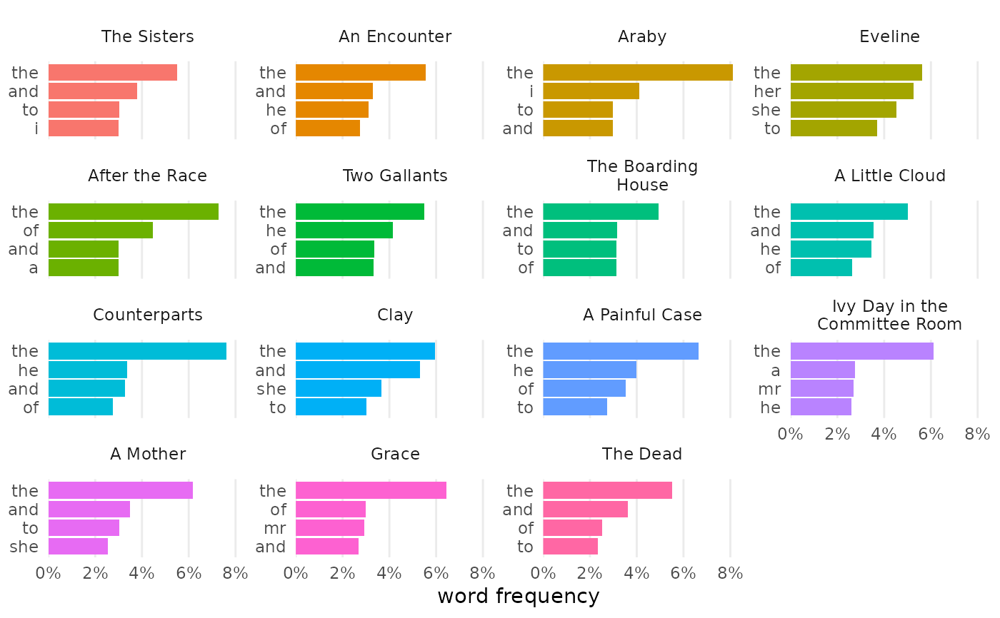
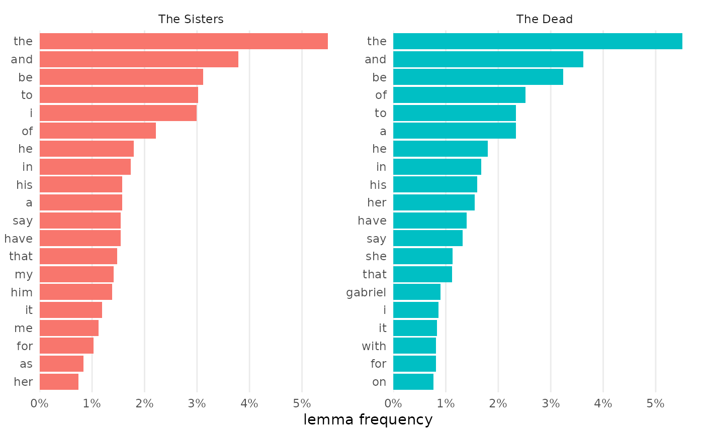

Plot bar graphs of frequent features
Usage
plot_doc_word_bars(
df,
rows = 1:10,
by = doc_id,
feature = word,
inorder = TRUE,
reorder_y = NULL,
color_y = FALSE,
percents = TRUE,
label = NULL,
label_tweak = 2,
label_inside = FALSE,
label_color = NULL,
na_rm = TRUE
)Arguments
- df
A tidy data frame, potentially containing columns called "doc_id" and "word"
- rows
The features to show
- by
The column used for document grouping, with doc_id as the default
- feature
The column to measure, as in "word" or "lemma"
- inorder
Whether to retain the factor order of the "by" column
- reorder_y
Whether to reorder the Y-values by facet
- color_y
Whether bars should be filled by Y-values
- percents
Whether to display word frequencies as percentage instead of raw counts
- label
Whether to show the value as a label with each bar
- label_tweak
The numeric value by which to tweak the label, if shown. For percentages, this value adjusts the decimal-point precision. For raw counts, this value adjusts labels' offset from the bars
- label_inside
Whether to show the value as a label inside each bar
- label_color
The color to use for the label text. If no value is chosen, labels will be black when
label_insideisFALSEand white whenTRUE.- na_rm
Whether to drop empty features
See also
Other visualizing helpers:
change_colors(),
plot_bigrams(),
plot_doc_word_heatmap(),
plot_hapax(),
plot_hir(),
plot_tf_idf(),
plot_topic_bars(),
plot_topic_distributions(),
plot_topic_wordcloud(),
plot_ttr(),
plot_vocabulary(),
visualize()
Examples
dubliners <- get_gutenberg_corpus(2814) |>
load_texts(lemma = TRUE) |>
identify_by(part) |>
standardize_titles()
dubliners |>
plot_doc_word_bars(rows = 1:4)

dubliners |>
dplyr::filter(doc_id %in% c("The Sisters", "The Dead")) |>
plot_doc_word_bars(feature = lemma, rows = 1:20)
